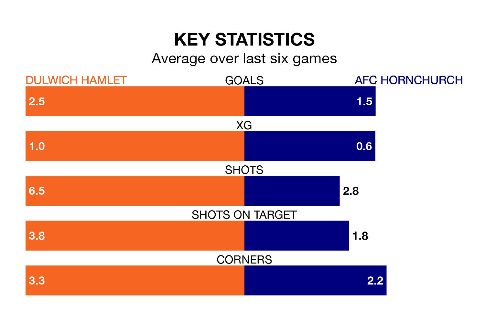

Saturday's match between Dulwich Hamlet and AFC Hornchurch promises to be one for the neutrals, as two of Isthmian Premier Division's most free-scoring sides go head-to-head.
Ahead of the game at Imperial Fields, Dulwich Hamlet and Hornchurch sit joint-third and top in the goal-scoring charts, with 54 and 65 goals respectively.
Hornchurch are top of the table after 27 games, of which they have won 19 and drawn seven, earning 64 points.
Dulwich Hamlet are eight places behind the visitors in ninth, with 11 wins and nine draws putting them on 42 points.
In the last 10 years, Dulwich Hamlet and Hornchurch have played each other on six occasions. Dulwich Hamlet won one of them, Hornchurch four, and they drew once.
On average, Dulwich Hamlet scored 0.8 goals and Hornchurch 1.2 in those matches.
Their last meeting was on September 26, when Hornchurch won 2-1 at home.
The home side are in good form in Isthmian Premier Division, with four wins and a draw from their last six games.
With three wins and three draws over that period, Hornchurch's form is slightly worse – they have taken 12 points from 18, compared to Dulwich Hamlet's 13.
Dulwich Hamlet's last match was on February 3, a 4-1 win against Margate.
Hornchurch beat Cheshunt 1-0 last time out, also on February 3.
Updated: 14:59 (UTC), 05/02/24